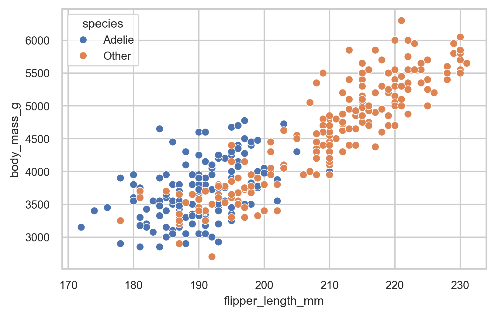
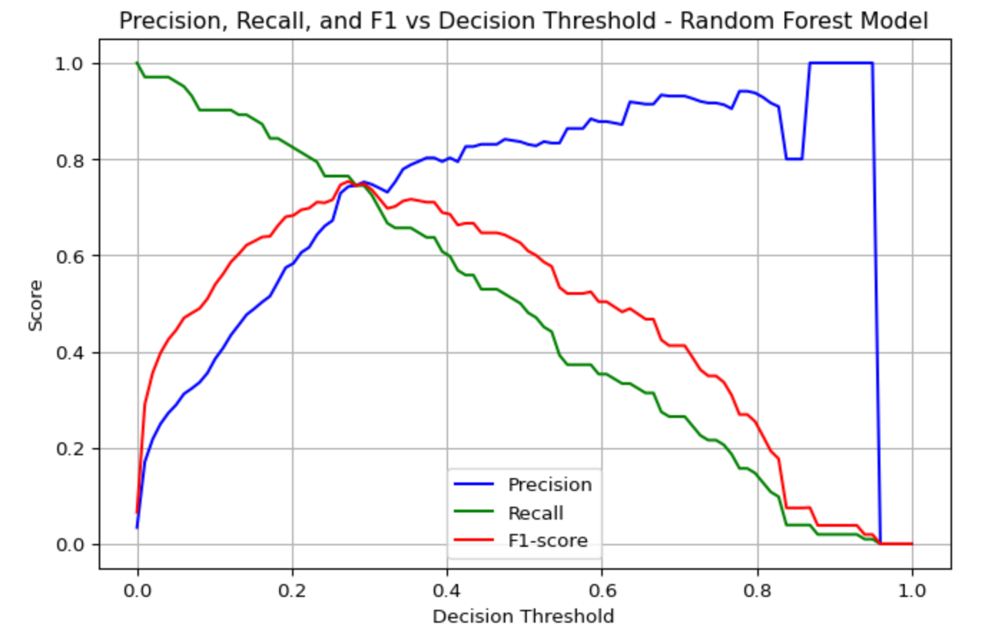
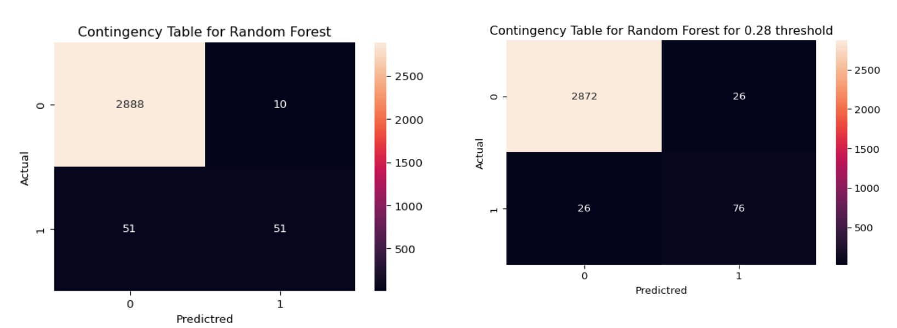
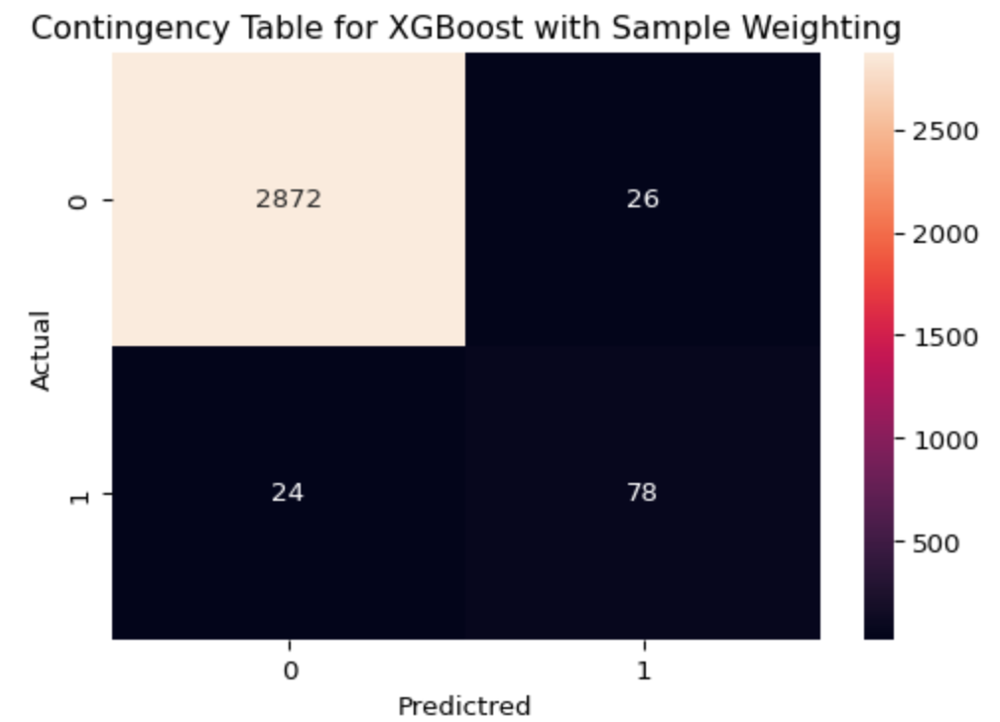
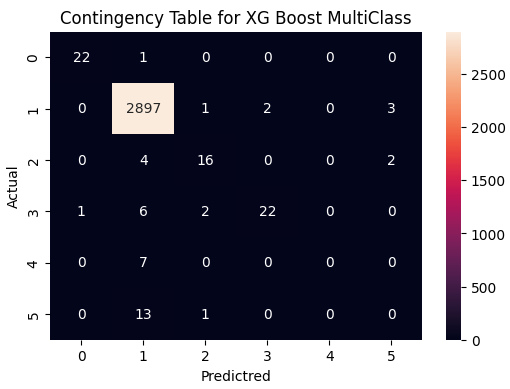
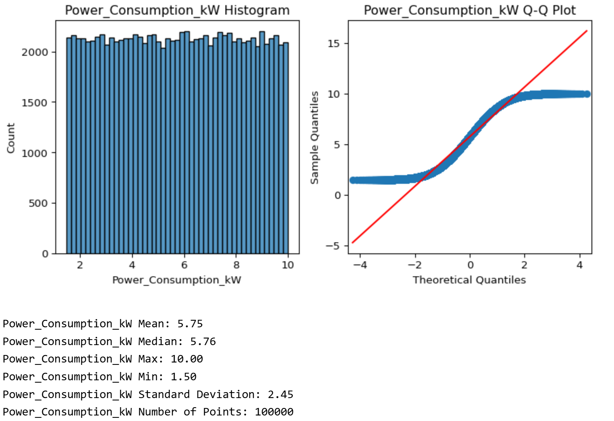
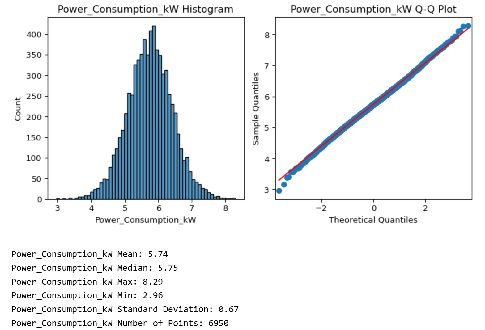
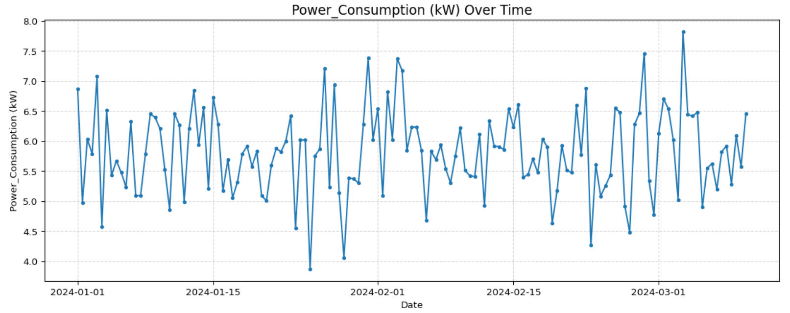
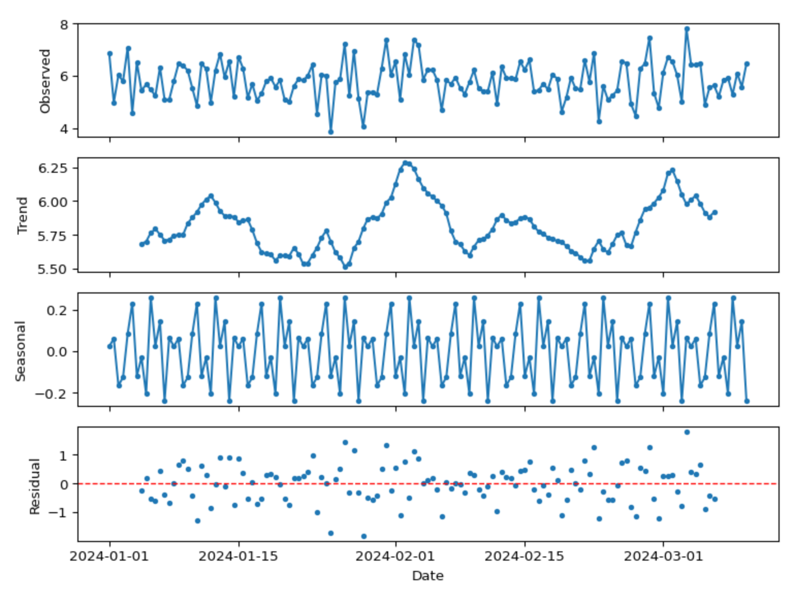
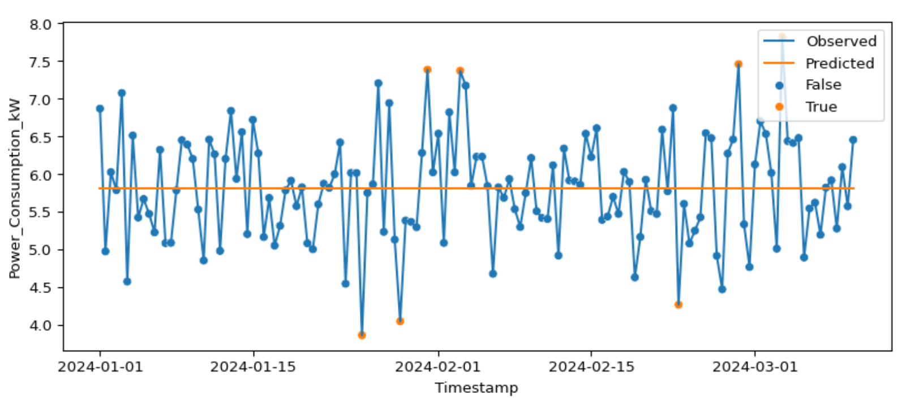

productID: consisting of a letter L, M, or H for low (50% of all products), medium (30%), and high (20%) as product quality variants and a variant-specific serial number
Type: is a columns that consist only on the letters L, M and H from productID.
air temperature [K]: generated using a random walk process later normalized to a standard deviation of 2 K around 300 K
process temperature [K]: generated using a random walk process normalized to a standard deviation of 1 K, added to the air temperature plus 10 K.
rotational speed [rpm]: calculated from powepower of 2860 W, overlaid with a normally distributed noise
torque [Nm]: torque values are normally distributed around 40 Nm with an σ = 10 Nm and no negative values.
tool wear [min]: The quality variants H/M/L add 5/3/2 minutes of tool wear to the used tool in the process.
Machine failure: label that indicates, whether the machine has failed in this particular data point for any of the following failure modes are true
Manufacturing Data Exploration
Example of 5 rows of the synthetic data used for classification problem.
UDI
Product ID
Type
Air temperature [K]
Process temperature [K]
Rotational speed [rpm]
Torque [Nm]
Tool wear [min]
Target
Failure Type
0
1
M14860
M
298.1
308.6
1551
42.8
0
0
No Failure
1
2
L47181
L
298.2
308.7
1408
46.3
3
0
No Failure
2
3
L47182
L
298.1
308.5
1498
49.4
5
0
No Failure
3
4
L47183
L
298.2
308.6
1433
39.5
7
0
No Failure
4
5
L47184
L
298.2
308.7
1408
40.0
9
0
No Failure
Manufacturing Data Exploration
Numerical Features Relationship

Failures marked on the pair plot showing stronger relationship with some features.
There is some non-linear correlation observed between Torque and Rotation speed (suggesting data is not entirely random and mimic a real use case).
There is a clear relationship between the fails and some of the features.
Manufacturing Data Preparation
Data Scaling
#Standardizationfrom sklearn.preprocessing import StandardScaler # use StandardScalar from sklearnmfg_data_scaled = mfg_data.copy().drop(columns=['Target'])scaler = StandardScaler()num_cols = mfg_data_scaled.select_dtypes(include="number").columns.to_list()mfg_data_scaled[num_cols] = scaler.fit_transform(mfg_data_scaled[num_cols])
Categorical Features Encoding
from sklearn.preprocessing import LabelEncoderl_encoder = LabelEncoder()mfg_data_3['FailureType_encoded'] = l_encoder.fit_transform(mfg_data_3['Failure Type'])
Model Selection
Method adapted from Chanin Nantasenamat’s GitHub code, multiple classification models were compared for ROC-AUC and the F1 score.
After tuning the model, the best F1 score obtained is 0.62. Cross-validation results suggest the model is over-fitting and might not be able to generalize.
RandomForestClassifier: ROC AUC on test dataset: 0.9751
RandomForestClassifier: f1 score on test dataset: 0.6258
Cross Validation Results
Test_f1 Cross Validation results 0.45
Train_f1 Cross Validation results 0.83
There is a big difference in performance between test and train results for the CV test.
Handling imbalanced dataset
Different techniques were explored to see if the model would improve over-fitting and F1-score.
Over sampling using Synthetic Minority Oversampling Technique (SMOTE) (imblearn)
Under sampling using RandomUnderSampler (imblearn)
No significant Improvement was observed on this specific dataset.
Random Forest Threshold Optimization
To improve the F1 score, a change in the probability threshold was explored; instead of using the standard 0.5, an analysis was done to estimate the ideal point to optimized the F1-Score

Optimized Model Results

After improving the threshold based on the model results, a balance can be found between precision and recall.
XGBoost Model Definition
A second approach is to employ XGBoost, a model that offers native functionality for applying class-specific weights. By increasing the weight of the minority class, the model is anticipated to more effectively mitigate class imbalance.
import xgboost as xgbscale_pos_weight = (len(y0) - np.sum(y0)) / np.sum(y0) #Intent is to give more weight to the minority class (1s on this case)xgmodel = xgb.XGBClassifier( scale_pos_weight=scale_pos_weight, use_label_encoder=False, eval_metric='logloss', random_state=42)xgmodel.fit(X_train, y_train)y_pred = xgmodel.predict(X_test)f1 = f1_score(y_test, y_pred)print(f"F1 Score: {f1:.3f}")
XGBoost Model Results
The F1 score for XGBoost without significant tuning and using class-weights is better than the random forest model originally used.
Model Results
F1 Score: 0.757
Cross Validation
Test_f1 Cross Validation results 0.73
Train_f1 Cross Validation results 1.00

XGBoost Multi-Class Model
XGBoost results were better than Random Forest. Multi-class model will be created to predict the failure types:
# Defining weights for each class.classes, counts = np.unique(y_train, return_counts=True)inv_freq =1.0/ countsclass_weights =dict(zip(classes, inv_freq))sample_weights = np.array([class_weights[label] for label in y_train])
XGBoost Model Results
Model Results
F1 score per class:
Heat-Dissipation: 0.95
No Failure: 0.99
Overstrain Failure 0.76
Powe Failure: 0.8
Random Failures and Tool Wear Failure are both 0.

XGBoost Features of Importance
Although the model performance is not great for all classes, understanding what features are important in the prediction model can help context experts interpret results and take action to reduce failures and improve the process overall.
Example of 5 rows of the synthetic data used for time series analysis.
Timestamp
Machine_ID
Operation_Mode
Temperature_C
Vibration_Hz
Power_Consumption_kW
Network_Latency_ms
Packet_Loss_%
Quality_Control_Defect_Rate_%
Production_Speed_units_per_hr
Predictive_Maintenance_Score
Error_Rate_%
Efficiency_Status
0
2024-01-01 00:00:00
39
Idle
74.137590
3.500595
8.612162
10.650542
0.207764
7.751261
477.657391
0.344650
14.965470
Low
1
2024-01-01 00:01:00
29
Active
84.264558
3.355928
2.268559
29.111810
2.228464
4.989172
398.174747
0.769848
7.678270
Low
2
2024-01-01 00:02:00
15
Active
44.280102
2.079766
6.144105
18.357292
1.639416
0.456816
108.074959
0.987086
8.198391
Low
3
2024-01-01 00:03:00
43
Active
40.568502
0.298238
4.067825
29.153629
1.161021
4.582974
329.579410
0.983390
2.740847
Medium
4
2024-01-01 00:04:00
8
Idle
75.063817
0.345810
6.225737
34.029191
4.796520
2.287716
159.113525
0.573117
12.100686
Low
Time Serie Data Exploration cont.
Example distribution for one Feature

Data seems randomly generated instead of coming from a real scenario.
Time Serie Data Exploration cont.
In order to make the data more like a real scenario, a mean was calculated for every 12 hours.

Time Serie Data Exploration cont.
Example Trend for Power_Consumption_kW for one of the machines.

Time Serie Data Analysis
After pre-processing the data, the study is focused on understanding how algorithms like the seasonal_decompose and ARIMA (or auto_arima) can be used for anomaly detection.
Time Serie Data Seasonal-Decomposition
#https://www.statsmodels.org/stable/generated/statsmodels.tsa.seasonal.seasonal_decompose.htmlfrom statsmodels.tsa.seasonal import seasonal_decompose# Decompose the time seriesdecomposition = seasonal_decompose(ts_df['Power_Consumption_kW'], model ='additive',period=14) # 7days for period

Time Serie Data Seasonal-Decomposition
Anomaly detection using Residuals:
# Anomalies in residualsresiduals = decomposition.resid.dropna() #Obtain residuals from decompositionsthreshold =2* residuals.std() # Our rule, on this cases based on research we selected to use 2X the standard deviation of the residualsanomalies = np.abs(residuals) > threshold # Applying the rule to obtain the anomalies
4 Data points identified as anomalies using this method
Results from the predictions are almost a constant value around the center of the distribution, meaning the ARIMA model is closely predicting the mean for every single value of the time series data. One reason for this could be that the data is not predictable.

Conclusions
The study demonstrated the application of concepts in machine learning to common manufacturing problems.
The Random Forest Classifier model ROC-AUC scores are high, indicating the model can differentiate effectively between fails and no-fails. However, in a real manufacturing process, the majority of the results are positive/pass, making this indicator not the best for this case. Recall and precision are more appropriate; depending on the use case, we would want to tune the model in one or the other direction or use the F1-score to optimize both.
The Random Forest model performed poorly for the F1 score when using a standard threshold of 0.5. The study demonstrated this can be improved by selecting an optimized threshold based on the model results.
Sampling can be a useful method to handle imbalanced datasets; however, in this specific case, it did not provide a significant improvement in model performance.
Assigning weights to each classes to handle the imbalance sample in combination with gradient boosting (XGboost) model, resulted in better results for F1-Score.
Multi-class classification results using the learnings from the binary-classification were demonstrated. Due to the nature and frequency of the failures and their relationship with the input features, two classes had zero F1-scores, meaning the model was not able to predict them. Other classes had acceptable F1-scores.
The study demonstrated how seasonal-decomposition and ARIMA can be used for anomaly detection in a real manufacturing use case; results showed how data points deviating the most from the center/target can be identified by using these methods. These methods might not be the best for a process where there are no patterns and data might just have random variability from the target.